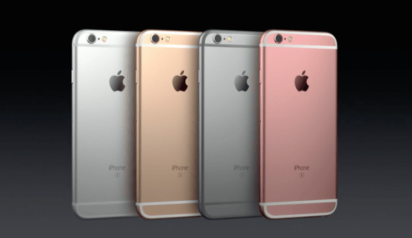

Iphone 6s

Introducing Iphone 6 series
-
About :The iPhone 6 and iPhone 6 Plus are smartphones designed and marketed by Apple Inc. The devices are part of the IPhone series and were announced on September 9, 2014, and released on September 19, 2014. The iPhone 6 and iPhone 6 Plus jointly serve as successors to the iPhone 5S and were themselves replaced as flagship devices of the iPhone series by the iPhone 6S and iPhone 6S Plus on September 9, 2015.
The iPhone 6 and iPhone 6 Plus include larger 4.7 and 5.5 inches (120 and 140 mm) displays, a faster processor, upgraded cameras, improved LTE and Wi-Fi connectivity and support for a near field communications-based mobile payments offering.
The iPhone 6 and 6 Plus received positive reviews, with critics regarding their improved design, specifications, camera, and battery life as being improvements over previous iPhone models. However, aspects of the design of iPhone 6 were also panned, including plastic strips on the rear of the device for its antenna that disrupted the otherwise metal exterior, and the screen resolution of the standard-sized iPhone 6 being lower than other devices in its class. Pre-orders of the iPhone 6 and iPhone 6 Plus exceeded four million within its first 24 hours of availability—an Apple record. More than ten million iPhone 6 and iPhone 6 Plus devices were sold in the first three days, another Apple record.
As a byproduct of this lack of rigidity, the touchscreen's internal hardware being susceptible to losing its connection to the phone's logic board (nicknamed the "touch disease"). The iPhone 6 Plus was also the subject of camera issues, including some devices with malfunctioning optical image stabilization or otherwise faulty rear cameras
- Hardware:The design of the iPhone 6 and iPhone 6 Plus are influenced by that of the iPad Air with a glass front that is curved around the edges of the display, and an aluminum rear that contains two plastic strips for the antenna. Both models come in gold, silver, and "space gray" finishes. The iPhone 6 has a thickness of 6.9 millimeters (0.27 in), while the iPhone 6 Plus is 7.1 mm (0.28 in) in thickness; both are thinner than the iPhone 5c and iPhone 5s, with the iPhone 6 being Apple's thinnest phone to date. The most significant changes to the iPhone 6 and iPhone 6 Plus are its displays; both branded as "Retina HD Display" and "ion-strengthened", the iPhone 6 display is 4.7 inches in size with a 16:9 resolution of 1334x750 (326 ppi, minus one row of pixels), while the iPhone 6 Plus includes a 5.5-inch 1920x1080 (1080p) display (401 PPI). The displays use a multiple-domain LCD panel, dubbed "dual-domain pixels"; the RGB pixels themselves are skewed in pattern, so that every pixel is seen from a different angle. This technique helps improve the viewing angles of the display
- Software: When first released, the iPhone 6 and iPhone 6 Plus were supplied pre-loaded with iOS 8, while the iPhone 5S was supplied pre-loaded with iOS 7. Apps are able to take advantage of the increased screen size in the iPhone 6 and 6 Plus to display more information on-screen; for example, the Mail app uses a dual-pane layout similar to its iPad version when the device is in landscape mode on the iPhone 6 Plus. As it uses an identical aspect ratio, apps designed for the iPhone 5, iPhone 5C, and 5S can be upscaled for use on the iPhone 6 and 6 Plus. To improve the usability of the devices' larger screens, an additional "Reachability" gesture was added; double-tapping the Home button will slide the top half of the screen's contents down to the bottom half of the screen. This function allows users to reach buttons located near the top of the screen, such as a "Back" button in the top-left corner
Accessories:When you’re out in the wilderness, you need to bring the essentials with you. For many iPhone addicts, this means an external battery pack and a wireless speaker. Outdoor Tech’s Buckshot Pro 3-in-1 Bluetooth speaker takes it one step further by adding a flashlight and bike mount to the mix. This insane speaker is a rugged wireless speaker with an IPX5 water resistance rating that can take a hit and still boom out sound.
You can also use the speaker as a speakerphone or microphone, if you need to make hands-free calls while hiking up a mountain or riding your bike on the trails. It’ll give you 10 hours of music playback on a charge, or you can use its battery power to charge your phone up while you’re on the go. Should you get lost in the dark, it also works as a flashlight with a strobe feature for sending out a distress signal.